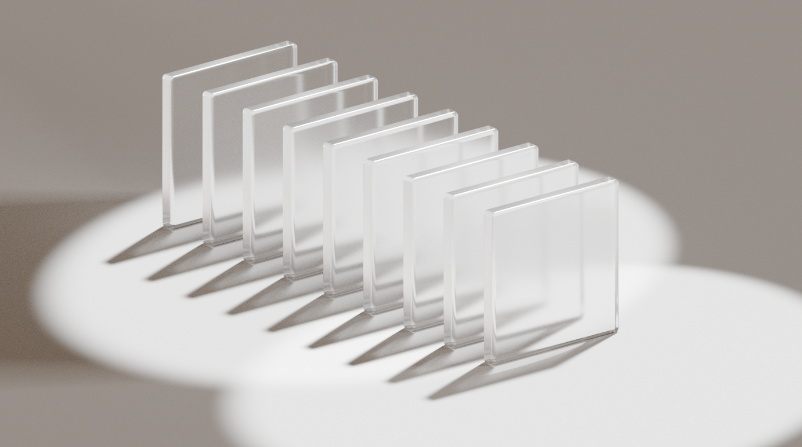

Demystifying Light Paths in Blender: Achieving Realistic Renders
Ever wondered why your glass objects look dark, or your interior scenes lack that subtle, bounced lighting? The answer often lies in Blender's Light Path settings. Understanding how Cycles, Blender's powerful path-tracing render engine, simulates light is crucial for achieving photorealistic results. This guide will walk you through these settings, with a special focus on transparent materials like the glass panes shown above.
1. What Exactly Are Light Paths?
Cycles works by simulating how individual rays of light travel from light sources (or the camera, in a process called backward path tracing), bounce off surfaces in your scene, and eventually reach the camera. Each "bounce" contributes to the final color and illumination of a pixel in your render. The Light Path settings control how many of these bounces Cycles is allowed to calculate for different types of surfaces and interactions.
More bounces generally mean more realism, especially for indirect lighting, complex reflections, and refractions through materials like glass. However, more bounces also mean longer render times. Finding the right balance is key.
Path Tracing Basics:
Cycles uses a technique called "path tracing" where virtual light rays are traced backwards from the camera to light sources. This creates incredibly realistic lighting but requires careful balance between quality and render time.
2. Finding the Light Path Settings
You'll find the Light Path settings in the Render Properties panel. With Cycles selected as your render engine, look for the "Light Paths" dropdown section.
3. Understanding Max Bounces: The Core Controls
The "Max Bounces" section dictates the maximum number of times a light ray can bounce for different types of interactions:
The Six Types of Light Interactions
Total Bounces
This is an overall cap on the number of bounces a light ray can make, regardless of type. If other specific bounce types are higher, they will be limited by this Total value. Think of it as the master control that overrides all others.
Diffuse Bounces
Controls bounces off matte or rough surfaces (e.g., a painted wall, unpolished wood). Higher values lead to better indirect illumination in interior scenes, as light scatters more realistically. This is crucial for achieving that soft, natural lighting you see in real environments.
Glossy Bounces
Governs bounces off shiny, reflective surfaces (e.g., metal, polished floors, mirrors). More glossy bounces mean more detailed inter-reflections. If you've ever seen mirrors reflecting other mirrors, that's glossy bounces in action.
Transmission Bounces
This is crucial for materials that light passes through, like glass or water (materials with a Glass BSDF or Principled BSDF with Transmission > 0). It controls how many refractive surfaces a light ray can penetrate. This is the key setting for our glass pane example.
Volume Bounces
For bounces within volumetric materials like smoke, fog, or SSS (Subsurface Scattering). Essential for realistic atmospheric effects and materials like skin or wax.
Transparent Bounces
This controls bounces for fully transparent shaders (like a Transparent BSDF often used for alpha cutouts on leaves or decals). Importantly, it also significantly affects transparent shadows – how many transparent or transmissive objects a shadow ray can pass through before the shadow becomes opaque.
Setting these values too low can lead to unrealistic or dark renders. For instance, low diffuse bounces can make corners and indirectly lit areas appear unnaturally dark. Low glossy bounces can make reflections look incomplete or black.
Quick Diagnosis Tip:
If your render has black areas where you expect to see reflections, transparency, or soft lighting, the problem is usually insufficient bounces for that specific interaction type.
4. The Importance of "Enough" Bounces: The Glass Pane Test
Let's revisit our hero image: a series of parallel glass panes. Rendering such a scene correctly heavily relies on adequate Transmission and Transparent bounces.

What Happens with Insufficient Bounces?
If you render a scene with 8 glass panes but your bounces are too low (e.g., Transmission = 4), light rays will be terminated after hitting the fourth pane. This makes any panes behind it appear dark or solid black, breaking the realism of the render.
Achieving Correct Results
To render the 8 glass panes correctly, you need to ensure your bounces are high enough. A good rule of thumb is to set your Transmission and Transparent bounces to be at least the maximum number of transparent surfaces a ray might have to pass through. For our 8 panes, settings like Transmission = 8 and Transparent = 8 (or higher) are needed. Luckily, Blender's default settings are often generous enough for many common scenarios.
The Count Rule:
Always count the maximum number of transparent or refractive surfaces in your scene. Set your Transmission and Transparent bounces to at least match this number, preferably a bit higher for safety.
5. Performance vs. Quality: Finding the Balance
The Trade-off
Understanding the relationship between bounce counts and render performance is crucial for efficient workflow:
Higher Bounces Benefits
- More physically accurate lighting simulation
- Better global illumination and color bleeding
- Realistic refractions and reflections
- Natural-looking indirect lighting
Higher Bounces Costs
- Significantly longer render times
- More memory usage
- Increased computational complexity
Lower Bounces Benefits
- Faster render times
- Less memory usage
- Suitable for test renders and previews
Lower Bounces Costs
- Artifacts like dark areas or black reflections
- Overly simple lighting that looks artificial
- Loss of subtle lighting effects
The key is to use just enough bounces to achieve the desired level of realism. Start with Blender's defaults and only increase specific bounce types if you notice issues. If your glass looks dark, increase Transmission and Transparent bounces. If indirect lighting is weak, increase Diffuse bounces.
Workflow Tip:
Use lower bounce counts for test renders and preview work, then increase them for final quality renders. This saves time during the creative process while ensuring quality results.
6. Other Notable Light Path Settings
Clamping Controls
Clamping can help reduce "fireflies" (random bright pixels) by capping the maximum brightness of light samples, but can crush highlights if set too aggressively. Use this carefully - it's better to fix the root cause of fireflies rather than clamp them away.
Caustics Settings
These are bright patterns of light focused by curved surfaces (e.g., light patterns at the bottom of a swimming pool). Enabling them adds realism but is very render-intensive. If they aren't essential to your scene, disabling them can save significant render time.
When to Enable Caustics
- Jewelry and gemstone renders
- Architectural scenes with water features
- Product visualization of glass objects
- Any scene where caustic patterns are a key visual element
When to Disable Caustics
- Character renders
- Interior architectural visualization
- Most general 3D work where caustics aren't noticeable
- When render time is more important than perfect accuracy
7. Practical Tips & When to Adjust
Scene-Specific Recommendations
Interior Scenes
Often benefit from higher Diffuse bounces (e.g., 4-8) for soft, even indirect lighting. Interior lighting relies heavily on light bouncing off walls, ceilings, and floors to create natural illumination.
Scenes with Lots of Glass/Liquids
Prioritize increasing Transmission and Transparent bounces. A minimum of 8-12 for each is a good starting point for complex scenarios with multiple layers of transparency.
Shiny Objects & Reflections
If reflections appear incomplete or cut off, increase Glossy bounces. This is especially important for scenes with multiple reflective surfaces that can see each other.
Troubleshooting Common Issues
Dark Renders
Before tweaking lights excessively, always check your bounce counts. Insufficient bounces are a common culprit for unexpectedly dark renders.
Black Reflections or Refractions
This almost always indicates insufficient Glossy or Transmission bounces respectively. Increase the relevant setting and re-render.
Flat-Looking Interior Lighting
Usually caused by too few Diffuse bounces. Increase this setting to allow more realistic light scattering.
Best Practices
- Start Simple: Begin with Blender's default Light Path preset. Only increase values if you observe specific problems.
- Incremental Testing: Increase bounce counts gradually and test render to see the impact on both quality and render time.
- Scene Analysis: Before rendering, mentally trace the most complex light path in your scene to determine minimum bounce requirements.
- Save Presets: Once you find good settings for a project type, save them as custom presets for future use.
Professional Workflow:
Many professional studios use different bounce settings for different render passes - lower for test renders and comps, higher for final beauty passes. This balances quality with productivity.
Take Control of Your Light!
Mastering Light Path settings in Blender Cycles is a significant step towards achieving truly photorealistic renders. While it might seem daunting initially, understanding what each bounce type does allows you to diagnose rendering issues and make informed decisions to balance quality with performance. As you've seen with the glass pane example, having "enough" bounces, especially for Transmission and Transparency, can make all the difference.
Your Light Path Toolkit
You now understand:
- How path tracing works and why bounces matter
- Each bounce type and when to adjust them
- The performance trade-offs between quality and speed
- Practical troubleshooting for common rendering issues
- Scene-specific strategies for different types of work
Beyond the Basics
With these fundamentals in place, you're ready to tackle more advanced rendering challenges. Understanding light paths opens the door to more sophisticated lighting setups, complex material work, and ultimately, more convincing and beautiful renders.
Remember: every professional renderer has dealt with these same challenges. The key is understanding the tools at your disposal and knowing when and how to use them effectively.
Next Steps:
Practice with different scene types - create test scenes with multiple glass objects, interior spaces, and reflective surfaces. Experiment with different bounce settings to see their impact firsthand.